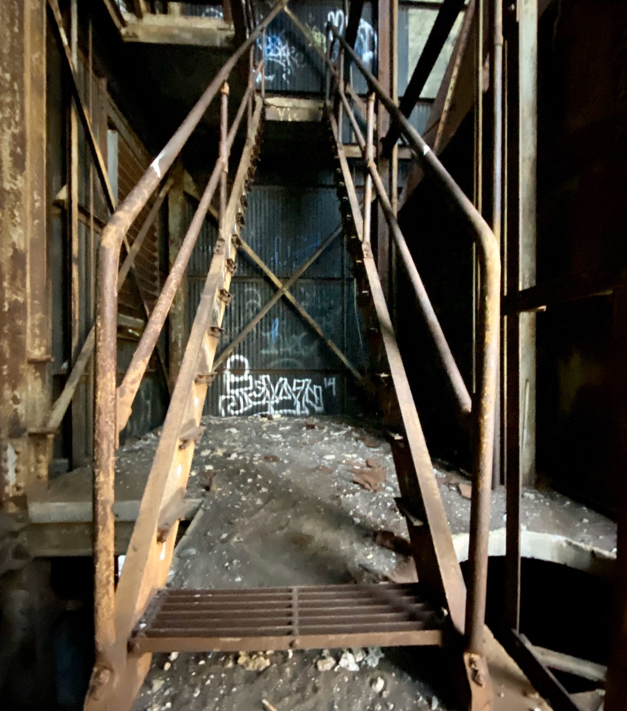
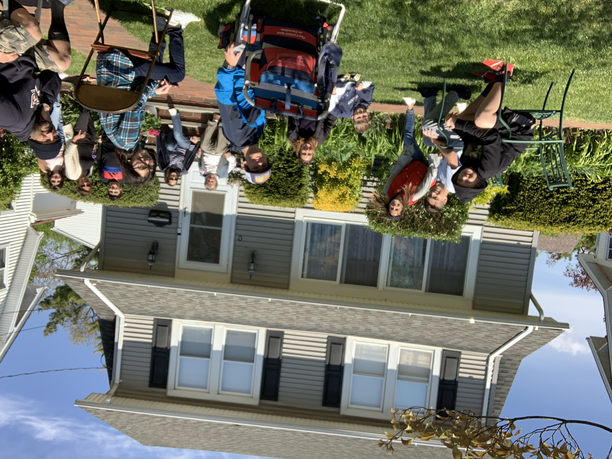

Help Us Demolish Cargill
Buffalo’s waterfront deserves a future without the rusting grain elevator on the Outer Harbor. This community campaign honors those we’ve lost—and demands the site be cleared for good.
Mach 3, 2004 — March 11, 2026
Rob was twenty-two, and beloved by his community. Whether it was late July nights drinking on Allen Street watching the Yankees, late shifts at the 7-11 on Elmwood, or his signature red jacket, you knew Rob.
On a summer night at the old Cargill grain elevator, Rob sadly decide to trespass and climb to the top. This proved to be fatal breaking the hearts of all who knew him. Rest easy Rob, it wasn't your fault for climbing a structure people have been climbing for decades.
This page is in honor of Rob.
The Buffalo River grain elevator is a monument to twentieth-century industry, and to neglect. Decades of weather, salt, air, and deferred maintenance have turned catwalks and silo caps into hazards. Just putting up “No trespassing” signs is not a safety plan.
The structure blocks meaningful public use of the Outer Harbor, casts a long shadow over redevelopment talks, and stands as a daily reminder of the worst night this community has faced in years. Demolition is not erasure, it’s accountability.
We’re asking elected officials and the property’s stakeholders to fund a controlled takedown, environmental remediation, and a transparent community process for what comes next—parkland, memorial space, or housing, decided by people who live here.

Join neighbors calling for the immediate demolition and remediation of the Cargill grain elevator site. Add your name—we’ll deliver signatures to city and state representatives.
Rob’s parents are facing funeral costs, time away from work, and legal help to push for answers about how an abandoned industrial site stayed accessible for this long. Every dollar eases the burden.
